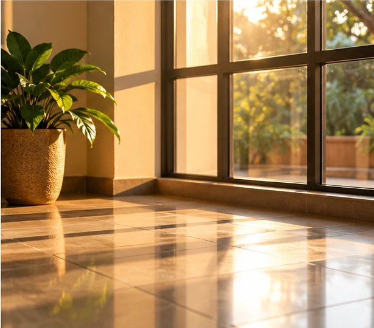

Notre histoire
Comment le ministère a commencé.
Il ne commence pas par une assemblée ni par un bâtiment, mais par une phrase reçue en 1984 : « Tu écriras des livres pour moi. » Le récit de cet appel, et ce qu'il a produit depuis.